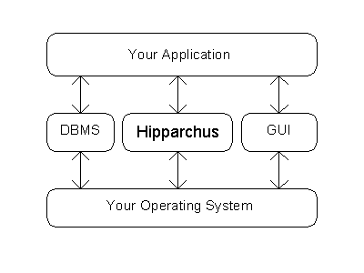
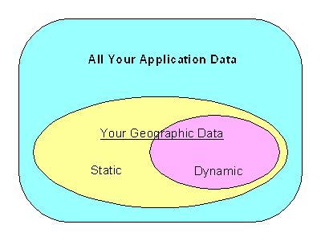

The purpose of this chapter is to describe the computing environments required for Hipparchus application development and end use processing. We will also review any special considerations that might be required.
The Hipparchus Library software product has been implemented with cross-platform portability specifically in mind. It is designed to work in a wide variety of computing environments, ranging all the way from hand-held and notebook personal computers to the largest of mainframes. As a consequence, there are very few restrictions imposed by the Hipparchus Library itself. It is more likely that other aspects of your application will determine your minimum practical computing environment. Nevertheless, you will need to study the specifics of the Hipparchus Library and support program requirements.
Hipparchus is distributed for use in a number of computing environments. Each distribution carries release and version designations.
Distribution refers to a Geodyssey product (the package you just acquired). A distribution may contain several versions of Hipparchus, current for the release. For example, the current Intel IN31 distribution of Hipparchus includes versions for linking with Microsoft, IBM, Borland, Watcom and Linux compiled applications.
Release refers to the product generation. Releases are designated by numbers, following the common industry practice. Major releases are serially numbered 1, 2, 3, etc. You can expect significant product additions or changes with a major new release. Incremental releases in which only moderate changes are introduced are numbered serially after a decimal point. For example, Release 3.1 follows Release 3, Release 3.2 follows Release 3.1, and so on. Software or data correction releases are numbered serially by a second digit after the decimal. For example, Release 3.11 might correct a faulty Release 3.1, while Release 4.31 might correct an incomplete Release 4.3. Most machine-readable materials distributed by us carry a time-stamp identifying the release. For example, all release 3.2 materials are time-stamped as having been created at time 03:20, while Release 3.21 materials will be time-stamped 03:21. (These time-stamps are applied during distribution and override only the file modification times. The file modification dates remain intact, reflecting our maintenance history).
Version refers to the Hipparchus Library that corresponds to a specific combination of hardware, operating system and compiler/linker environments supported as part of a release. A version of Hipparchus is directly associated with the construction of a specific instance of the Hipparchus Library. At any release level, a version is always represented by a binary object library (hipparch.lib) and the version-specific C/C++ language header used in its construction (hippvrsn.h). Note that two other C/C++ language headers are used in constructing the Hipparchus Library: they are hipparch.h and hippengn.h. These are version independent and are a part of the source materials associated with any distribution. To emphasize their use in constructing the Hipparchus Library, they are normally flagged as "read-only" in the distribution materials.
Every Hipparchus distribution belongs to a specific Hipparchus Engine Class.
The term "Engine Class" refers to the most general description of Hipparchus functionality. For example, all distributions of Hipparchus supporting 32-bit Intel microprocessors are of the same engine class. Those supporting RISC computers under UNIX® are of yet another engine class.
Distributions carrying the same engine class designations can be expected to have comparable capabilities and are usually distributed under similar licensing agreements.
There are only three general statements that need to be made regarding minimum hardware requirements.
First, you will require hardware for floating point arithmetic. Although many processors such as the Intel 80386 can be run in a mode in which floating point hardware is emulated by software, the Hipparchus Library does not support this mode. If your processor does not already provide floating point arithmetic capability, you will need to add it. Hipparchus makes extensive use of floating point arithmetic and its availability is considered mandatory for end-use applications. Without the floating point hardware capability installed, you will not be able to run the demonstrations or test your application (but you will of course still be able to edit, compile and link your application).
Second, you will require sufficient processor memory (RAM) to accommodate the Hipparchus run-time code and the related data and indexing structures you will be developing for your application. The Hipparchus run-time code requirement is comparatively modest; between 20K and 150K bytes are needed. Otherwise, the nature of your application and the other software components you elect to use will decide your RAM requirements. Chapter 7: Refining Your Design details your RAM requirements.
Third, you will normally require a color display with reasonably high resolution. We recommend a VGA (or better) graphics adapter and monitor combination providing at least 640x480 resolution display of 16 colors. If you plan to produce hard copy graphics, then we recommend as minimum that you use a monochrome laser printer with HP-GL/2 plotter language compatibility.
There are no special operating system functions required by the Hipparchus Library. The only operating system resources referenced directly by any Hipparchus Library function is the heap memory manager. However, these references are exclusively via two pass-through Hipparchus functions, h1_Malloc and h1_Free, for which you may substitute.
The demonstration and utility support components distributed with Hipparchus do of course have additional specific requirements. These are dealt with in the specific README text files that accompany the distribution.
Hipparchus is not the only tool you will use to develop your application.
For a complete development environment, we count on you to provide the other system components that you require.
In particular, you will likely already be using the following:

Figure 4: Relationship of Components
Figure 4 illustrates how Hipparchus relates to other components of your
application. Notice that your application is central to the scheme,
controlling the usage of various facilities (for example, the GUI and
the DBMS). Hipparchus is called by your application for support in dealing
with the "where" of things. Hipparchus calls on your operating system for
run-time memory management services only.
For applications built for use by others, the GUI provides a rich
interface for presentation and interaction with users. It may also provide a
familiar "touch and feel" that will make your application easier to use.
For applications that work with significant amounts of data, a DBMS can
provide your clients with the required external data handling facilities and
at the same time enforce appropriate data management and backup disciplines.
In creating an application program, the developer combines GUI, Hipparchus
and DBMS functions to build an application system for the ultimate user.
The application is, in essence, the "glue" that binds these independent
components.
The application program is compiled to produce an object program. The
object program is then linked with referenced run-time library functions
to produce an executable application program (or DLL or equivalent).
Hipparchus is designed to accommodate the broadest variety of GUI and
DBMS packages. Specifically, Hipparchus is intended to work with
these products, rather than replace their functionality. Your application
logic will determine how and where.
Not everyone uses a graphical user interface. However, if your application
needs this facility, Hipparchus is designed specifically for easy integration.
The integration is done by your application program which controls the
interactions between the user, the GUI and Hipparchus. Typically, Hipparchus
is used to supply the GUI with graphics by projecting geographic features
from the ellipsoidal Earth onto the flat, planar display. These may be
points, lines, polygons or filled areas. This feature presentation can
be in the graphics context of raster images as background. Hipparchus is
also used to "unmap" a mouse or pen position from the flat display of both
raster images and vector objects, thereby enabling the user to select or
trace geographic features for subsequent processing.
There are no special integration requirements for "binding" Hipparchus
with your DBMS. Hipparchus does not communicate directly with your DBMS.
Instead, your application manages the storage and retrieval of data from your
DBMS. Your application extracts object location attributes from external
databases and passes these to Hipparchus via internal memory structures. In a
similar fashion, geographic results derived by Hipparchus are passed back to
your application via internal memory structures. If results are to be stored
externally, your application selects them from a memory structure and
presents them to the DBMS (or simple file system) for storage externally.
Your application may take significant advantage of the Hipparchus internal
cell index by using it as the basis for the DBMS external geographic index
(the spatial index).

Figure 5 illustrates the data domains involved. From the domain
of all your data, only a subset will reference geography. Of this, some may
be handled by your DBMS and some by a simple file system. Many applications
require a mixture of static and dynamically updatable geographic data.
Because the static elements are often the most voluminous (e.g., coastlines,
roads, rivers, lakes, etc.), many developers opt to handle these items
outside the DBMS using the file system native to their computing environment,
reserving use of the DBMS for storage of the more dynamic elements (such as
retail sales locations, flight plans or satellite image boundaries).
Naturally, the run-time behaviour of your DBMS and native file system
will influence the overall performance of your application.
Your DBMS or native file system is capable of handling your data in
a wide variety of formats. These are not directly relevant to Hipparchus.
Since you will be passing the geographic attributes to Hipparchus in memory
structures, you can reformat them "on the fly", as required. Of course,
if you are starting from scratch, you will design your DBMS tables or file
system records to be as compatible as possible. In particular, you may
want to store Hipparchus floating point data externally. If your DBMS doesn't
handle floating point data directly, you can easily disguise the items
as "text" or "binary" data, subject to any compiler or storage alignment
restrictions. It is highly unlikely that you would ever want your DBMS
to operate directly on this kind of item, anyway.
In setting up your DBMS or native file system solution, you will be
dealing with geographic objects that consist of points, lines or regions.
How to deal with such things is discussed in Chapter 5: Design
Concepts and again in Chapter 7: Refining Your Design and
Chapter 12: Advanced Topics.
In general, Hipparchus applications can be compiled with any ANSI standard
compliant C/C++ compiler that produces object modules compatible with the
object modules that make up the Hipparchus Library distribution. For
each distribution, we specify that information. For example, for the
Hipparchus IN31 Product Distribution, the Hipparchus Library
has been compiled using the Microsoft, Borland, IBM, WatCom and Linux
compilers with the flat model and in-line math options specified. Many of the
competitive C/C++ compilers for this environment can produce object modules
compatible with one of these formats.
The heap storage management functions, h1_Malloc and h1_Free
are used by the Hipparchus object handling functions. These are merely
"pass-through" usages of the ANSI C functions malloc and free.
If need be, you can replace these with installation-specific functions
of your choice which might optionally provide context-switchable memory
management services.
The system memory heap is the only run-time resource that the Hipparchus
"engine" uses directly.
When constructing objects, some of the Hipparchus functions need a large
number of small blocks of memory workspace for transient use. In some processing
environments, this use of the system memory heap can lead to significant heap
fragmentation, causing degraded performance.
To avoid this, the Hipparchus engine uses its own "scratch
pad" temporary workspace management facilities. These are similar to the
stack memory management facilities sometimes provided by the non-ANSI
alloca C library function.
Sharing of services of the Hipparchus temporary workspace manager with
your application is quite practical but requires strict adherence to the
usage protocols. These are outlined for the h6_WorkspaceInit function
in the Hipparchus Library Reference Manual.
Floating point math functions used by Hipparchus (such as sqrt) are
redefined in hipparch.h. The re-definitions are merely direct macro
substitutions for the standard math functions. If you will be using any of
these math functions to operate on Hipparchus data entities, we encourage you
to use their redefined forms so that a possible future change in type can be
easily accommodated (for example, a type change from double to long
double).
Linking programs with the Hipparchus Library is simple and
straightforward. Hipparchus Library functions appear as any other run time
library function.
All of the Hipparchus linkage references are "visible" to your application.
In other words, there will be no surprises from "hidden" references that
only surface at linking time. References to the Hipparchus Library
that you make in your application will be the only references made.
All distributions of Hipparchus include a set of HTML manuals and help
files that are readable using any Internet web browser. These files
include: These files are extensively hyperlinked for easy cross-reference.
Typically, you access the HELP information while creating or debugging
your application program. Alternatively, using your browser or Windows Help,
you can print the notes for off-line study.
You should also consider compiling the supplied source materials in an
environment that supports a multi-module browse facility. This can
significantly assist in understanding the relationships and calling sequences
of the functions.
Hipparchus is easy to add to most C language programming and development
environments. The product has a clear focus on efficiency considerations
and does not constrain developers in their choices of other tools.
GUI Integration
DBMS Integration
C/C++ Language Compiler Considerations
Linking Considerations
On-Line HELP
Georama for Windows 95 is documented by Windows 95 on-line Help.
Summary
Previous Chapter |
Top of Chapter |
Next Chapter